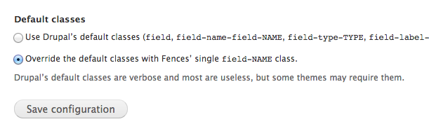
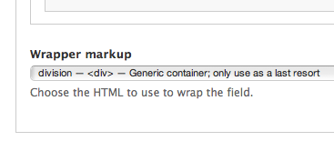

by Leah Wagner // @leahmarsh
from The Jibe // @thejibe
by Leah Wagner // @leahmarsh
from The Jibe // @thejibe
What is Modular CSS and how it can be helpful?
How you are probably already using this philosophy. (whether you know it or not.)
How a set file structure and naming conventions makes this philosophy work best.
How preprocessors like SASS and adding on tools like SASS-globbing and Compass can improve your workflow.
How do we apply this to Drupal when so much of our HTML is pre-rendered for us?
This is not something you download. It's a philosophy that need to integrated into every code decision you make.
Some terms you may have heard. Get ready for anagram overload!
5 different categories of code
File structure and naming conventions
Bringing us back to One Div To Rule Them All!
Module: Fences
Enable class overrrides
Select HTML5 element on a per field basis

by Leah Wagner // @leahmarsh
from The Jibe // @thejibe
by Leah Wagner // @leahmarsh
from The Jibe // @thejibe